Классификация крыш.

Крыша– верхняя ограждающая часть строения. Крыши современных индивидуальных домов и коттеджей в основном представляют собой сравнительно простое инженерное сооружение, имеющее три составные части:
– каркас – внутренний остов;
– несущую часть крыши, в которую входят стропила, подстропильные балки, ферма, прогоны, панели и др. Несущая часть, выполняющая функции обеспечения прочности крыши, передает нагрузку от снега, ветра и собственного веса на стены или отдельные опоры;
– опорную поверхность для наружного покрытия кровли любого вида.
По конструктивному решению крыши бывают чердачными (раздельными) или бесчердачными (совмещенными). В свою очередь чердачная крыша может быть утепленной и холодной. Холодная крыша защищает здание только от атмосферных осадков, а теплозащита помещений верхнего этажа обеспечивается чердачным перекрытием. В бесчердачных крышах несущие элементы служат перекрытием верхнего этажа, то есть бесчердачная крыша одновременно выполняет функции чердачного перекрытия. В этом случае она называется покрытием, или совмещенной крышей. Бесчердачные крыши бывают вентилируемыми, частично вентилируемыми и невентилируемыми.
В жилых зданиях крыша часто образуется скатами – наклонными для стока воды плоскостями. Линия пересечения двух скатов, образующих внешний наклонный угол, называется ребром, внутренние углы, сформированные скатами, – ендовами (разжелобами). Конек – верхнее горизонтальное ребро крыши. Нижняя часть ската называется свесом.
Тип крыши, как правило, определяется геометрической формой и материалом кровли. В свою очередь форма обусловливается архитектурной композицией здания. В зависимости от уклона плоскостей различают крыши плоские (до 2,5 %) и скатные (более 10 %). В индивидуальном строительстве чаще применяются именно эти виды крыши.
Плоские крышиПлоские крыши, опирающиеся на несущие стены, которые имеют одинаковую высоту, самые простые в исполнении. Положив несколько балок на несущие стены или отдельные опоры, мы получаем основание для кровли. Элементы подобной конструкции работают только на сжатие или изгиб и не создают бокового распора, что значительно упрощает постройку и выбор материала. Такие крыши используют в районах с малым количеством осадков при хорошем качестве строительных работ. Основное их достоинство состоит в возможности ее эксплуатации в качестве солярия, террасы, цветника и даже спортплощадки. Недостаток плоских крыш в том, что зимой на них скапливается снег, а во время дождей плохо стекает вода. Поэтому на кровле возможно образование застоя воды, что может привести к появлению в этих местах протечек.
Скатные крышиПри строительстве жилых домов часто создают скатные и пологоскатные крыши. Достоинство скатных крыш в том, что они обеспечивают летом слив (например, дождевой воды), а зимой – сползание осадков в виде снега или льда. Это удлиняет срок их службы.
Уклоны скатов устанавливают в зависимости от материала кровли, климатических условий, архитектурных и эксплуатационных требований. Тот или иной уклон крыши зависит от климатических условий местности, материала кровли, а также от строительных традиций, существующих в определенных регионах.
Достаточно просты в исполнении односкатные конструкции. Односкатная крыша своей плоскостью (скатом) опирается на несущие стены, которые имеют разную высоту. В основном так перекрывают небольшие домики, хозяйственные постройки и вспомогательные сооружения – пристройки к дому, временные жилища и др. Как правило, такие строения бесчердачные либо с антресолями в подкрышном пространстве.
Для экономичного жилья в большей степени подходят двускатные крыши. Такая крыша состоит из 2 полостей-скатов, опирающихся на несущие станы одинаковой высоты.
Вверху двускатной крыши находится конек. Пространство между скатами, имеющими треугольную форму, называется фронтонами, или щипцами. Разновидностью двускатной крыши является мансарда. Такая форма крыши также называется щипцовой. Щипцовая или двускатная крыша считается простой в изготовлении и надежной в эксплуатации.
Мансардная крыша двускатной основы представляет собой комбинацию из двух пологих скатов, сомкнутых в вершине, и двух крутых скатов, продолжающих пологие. Выбор мансардной крыши обусловлен желанием более полноценно использовать чердачное пространство. Но такая крыша немного сложнее в изготовлении.
На рис. 8 показан распространенный вариант реализации двускатной крыши в типовом доме.
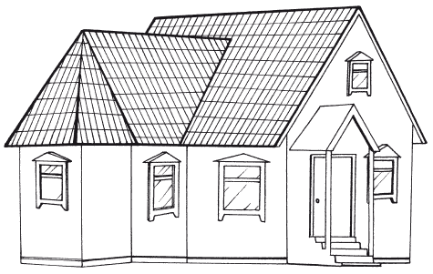
Выбор двускатной крыши обусловлен внешней простотой конструкции, что позволяет сэкономить финансовые средства при строительстве дома. При ограниченных финансовых возможностях возведение крыши более простой конструкции позволит сохранить достаточно серьезные средства на внутреннюю отделку помещений и даже на оформление приусадебного участка. Тем не менее, эту крышу назвать простой можно лишь условно: в ее конструкции присутствует элемент пирамидальной крыши, плавно переходящей в двускатную.
Крыша, образованная двумя трапециевидными скатами и двумя торцевыми треугольными, носит название вальмовой четырехскатной. Если фронтоны срезаны, то крышу принято называть двускатной вальмовой (полувальмовой).
Четырехскатные крыши предпочтительнее применять при строительстве традиционных больших домов. При строительстве особняков и вилл отдают предпочтение мансардным и сложным многощитковым крышам.
Крыша, состоящая из нескольких треугольных скатов, сходящихся в одной верхней точке, носит название шатровой. Как правило, это пирамидальные четырехгранные, реже – восьмигранные крыши. Шпилеобразная крыша состоит из нескольких крутых треугольников-скатов, также соединяющихся в вершине.
Крыши сложных конфигурацийОблик здания создает множество конструктивных элементов, но нельзя забывать про два основополагающих элемента внешнего дизайна загородного дома: фасад и крышу. В этой части книги разговор будет идти о крыше.
Чем проще форма крыши, тем легче ее возводить (рис. 9). Крыша более сложной конфигурации будет требовать и более детального расчета архитектора. Приготовьтесь к тому, что в этом случае ее стоимость может в несколько десятков раз превышать стоимость обычной одно– или двускатной крыши. При проектировании крыши сложной конфигурации вы обязательно столкнетесь с проблемой увеличения общего количества ендов, являющихся наименее надежным местом кровли. Из-за того, что уклоны ендов значительно меньше уклона скатов, по ним будет протекать наибольшее количество воды, в результате при строительстве этим узлам необходимо уделить очень пристальное внимание. В зимнее время снег, скапливающийся в ендовах, будет увеличивать нагрузку на кровлю.
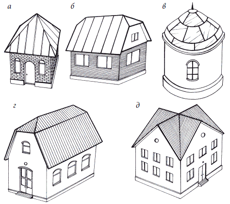
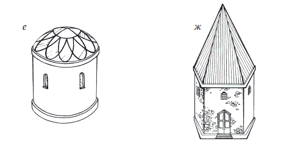
Загородный дом в наше время становится для многих своих хозяев постоянным местом проживания. Люди стремятся вырваться из душного и суетного города на природу. Большинство может себе позволить это удовольствие только в летний период. Однако уже многие имеют возможность проживать за городом круглый год, поэтому их подход к дизайну загородного дома стал более основательным. Ведь владельцу хочется, чтобы его жилище выглядело не как «дачный домик» советского времени, а как фамильный особняк, в котором можно не только принять большое число гостей, но и удивить всех своим эстетическим вкусом, определившим внешний дизайн и внутреннюю обстановку. Конечно, многое зависит от уровня состоятельности и платежеспособности хозяина, но не все им ограничивается. Современные архитекторы могут предложить десятки дизайнерских проектов, и каждый сможет выбрать вариант по своему вкусу и карману.
Любой дом, имеющий крышу сложной конфигурации, отличается выразительностью. Он также позволяет дизайнеру воплотить в жизнь самые смелые и оригинальные замыслы, а хозяину во внешнем виде загородного дома отразить свои вкусы и предпочтения.
Классикой на сегодняшний день считается многоскатная и многоуровневая крыша сложного профиля. Свою популярность она приобрела за счет возможности встраивать в чердачное пространство мансарду.
Скатные крыши бывают самой разной формы: односкатные, двускатные и четырехскатные, вальмовые, мансардные (рис. 10).
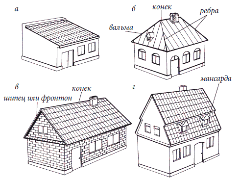
Очень оригинально смотрится деревянный дом, крыша которого сделана на основе четырехскатной.
Но в отличие от базовой основы ее исполнения, представленной на рис. 11, крыша имеет несколько элементов, выгодно ее отличающих в функциональном плане. Вместо чердачного окна на крыше мы можем увидеть два мансардных окна. Пространства под четырехскатной крышей обычно достаточно для оборудования в чердачном помещении просторной мастерской или дополнительной комнаты отдыха. Наличие щипцов в передней части крыши придает дому выразительные очертания и эстетическую привлекательность. Однако следует учесть, что использование щипцов при проектировании крыши повышает сложность исполнения, а значит, и стоимость работ.
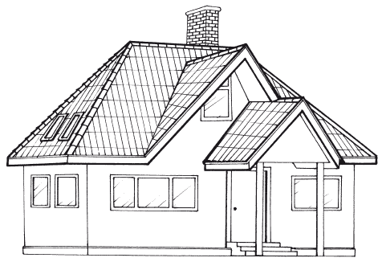
Многощипцовая крыша используется при строительстве домов сложной конфигурации. Достоинством такой крыши является выразительность внешнего вида. Но главное в ней – перекрытие нескольких помещений одноуровневой кровлей. Правда, при выборе такой крыши заказчик столкнется со сложностью исполнения.
Шпилеобразная крыша состоит из нескольких крутых треугольников-скатов, также соединяющихся в вершине.
Реже при выборе крыши заказчик останавливается на сводчатых, купольных и конических крышах. Это происходит из-за их сложности в изготовлении и соответствующего удорожания работы. Кто не стеснен в средствах, может позволить себе загородный дом с крышей, имеющей круговые или параболические очертания (сводчатая крыша). Еще чаще можно увидеть сферические или конусные крыши.
Проектирование крыши сложной конфигурации считается очень ответственным и дорогостоящим делом. Использование таких крыш в конструкции целесообразно для домов, площадь которых превышает 500 м . В противном случае ее стоимость может быть сравнима со стоимостью строительства всего загородного дома.
На рис. 12 и 13 показаны дома, отличающиеся сложностью крыш.
Первый вариант, представленный на рис. 12, в основе крыши имеет двускатную композицию, но несколько добавочных элементов выгодно отличают этот дом.
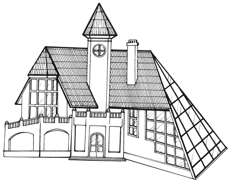
Башенный элемент с пирамидальной крышей может заключать в себе винтовую лестницу на верхние этажи и полуэтажи.
Как видно из рисунка, конструкция дома подразумевает хаотичное распределение этажей по высоте и относительно друг друга. Кроме башни, можно увидеть на рисунке еще интересный элемент: плавный спуск боковой части двускатной крыши до уровня земли. В этой части здания можно разместить прекрасный зимний сад, при условии использования особых материалов в конструкции этой части крыши. Эркер спальни с выходом на террасу венчает также пирамидальная крыша с переходом в двускатную. Эта конструктивная сложность (составная конструкция крыши) сделает дом непохожим на другие, наделит его индивидуальностью и даже неким шармом.
Надо сказать, что чем сложнее конфигурация крыши (а они в последнее время становятся все более изощренными), тем выше стоимость кровельных материалов. Причина, во-первых, в том, что количество отходов при укладке кровли увеличивается, а во-вторых, на периметр каждого ската необходимы разные профили и доборные элементы, которые нужны для устройства качественной гидроизоляции и вентиляции, для эстетических задач: прикрытие стыков, деталей конструкции. Стоимость работ возрастает многократно. Причем она напрямую не связана с ценой кровельных материалов.
Второй вариант сложной компоновки крыши загородного дома дан на рис. 13.
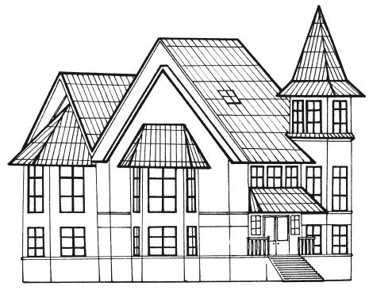
При проектировании этого загородного дома архитектор использовал в конструкции дома тот же башенный элемент, но с другой целью. Необходимо отметить, что венчает его пирамидально-конусная крыша более сложной конфигурации, нежели в предыдущем случае. Это придает дому загадочный вид, выражая желание его хозяина более полновесно отразить свои вкусовые пристрастия во внешнем дизайне дома.
В отличие от предыдущего дома, башня здесь не используется в качестве «прибежища» для лестничного пролета. Интересная форма стен и наличие большого количества окон, выходящих на разные стороны, позволяют получить прекрасное освещение внутри комнат. В таком помещении будет прекрасно чувствовать себя хозяин дома, разместив там свой кабинет и поставив рабочий стол к окну. Его рабочее место будет отлично освещаться естественным светом.
Однозначно отнести крышу к какой-либо конфигурации практически невозможно. Более всего для нее подходит наименование многощипцовой, с элементами обустройства небольшого чердачного помещения. В основе конструкции все-таки использована полувальмовая крыша с многочисленными элементами, относящимися к многощипцовой крыше, выполненными в виде двускатных частей.
В настоящее время многие люди выбирают загородные дома (коттеджи) в качестве места постоянного проживания. Неудивительно, что размеры строений существенно выросли. Основных причин таких предпочтений несколько: во-первых, люди устают от стесненных условий городских квартир, и пожалуй, это главный фактор, но не менее важно то, что возводить дома с маленькой площадью элементарно невыгодно. А у большого дома растет количество этажей и уже не находится много желающих покрывать огромный жилой комплекс двускатной крышей. Выглядит это все достаточно тривиально, серо и убого: примеры подобных сооружений, появлявшихся в 90-х гг. XX в., можно встретить в любом уголке России. Причем часть из них так и не достроена. Сейчас уже таких монстров продать крайне сложно, поскольку нынешние домовладельцы стремятся сделать дом привлекательным и интересным с архитектурной, дизайнерской, эстетической точки зрения. Крыша играет в этом деле далеко не последнюю роль. Более того, по мнению многих экспертов, именно оптимальная конфигурация крыши в наибольшей степени влияет на внешний вид современного коттеджа – она должна гармонично завершать сооружение, придавая ему целостность. Необходимо, чтобы ее контуры и окраска максимально эффектно вписывались в окружающий ландшафт. Крыши часто называют вторым фасадом дома.
В теплых странах архитекторы намного охотнее идут на усложнение формы крыши, чем в России, поскольку у нас климат суровее: то затяжные дожди, то снег по полгода лежит. Прежде всего приходится думать о практичности.
Если проанализировать тенденции строительства, то можно заметить, что на крыши существует своеобразная мода и какие-либо перемены происходят каждые 3 года. Например, 10 лет назад в строительстве коттеджей были популярны такие архитектурные броские элементы, как башенки на крыше и т. п. «примочки». Сейчас же, возможно по аналогии с западной строительной практикой и из-за сложности реализации подобных «прибамбасов», российские домостроители при создании крыш стремятся к большей скромности, но и большей элегантности.
Плоские крыши: дизайнерские решенияИдея использования плоской крыши хоть и стара, тем не менее, современные технологии позволяют ее освежить и придать загородному дому совершенно иной, более изысканный и комфортный вид.
Крыша с малым скатом позволяет воплотить самые разнообразные ландшафтные идеи. Площадка на крыше может стать для вас укромным уголком, который скрыт от посторонних глаз (рис. 14).
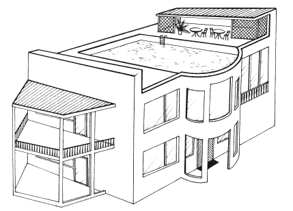
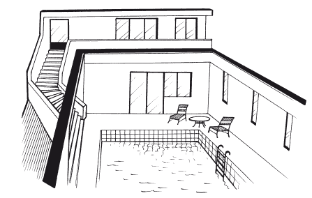
Кроме того, прямо в центре дома можно устроить чудный зимний сад. В этом случае крыша должна быть прозрачной для широкого доступа света в ваш зеленый уголок.
Всегда будет популярна идея создания на крыше небольшого садика для летнего времяпрепровождения. Беседка в саду – это интересно, красиво, но что может быть романтичнее маленького, но роскошного сада на вашей крыше, где вы сможете устроить, например, утреннюю трапезу с видом на окрестности (рис. 15).
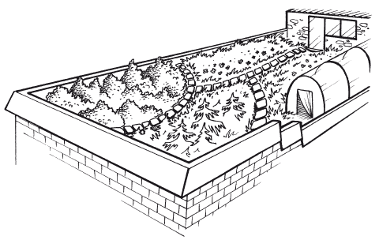
Ваш дом, утопающий в зелени, раскрашенный яркими красками цветущего сада, будет казаться райским уголком, как только вы подниметесь на его крышу. Летом вьющиеся растения позволят уединиться в тени «скромной» беседки, организованной на террасе (рис. 16).
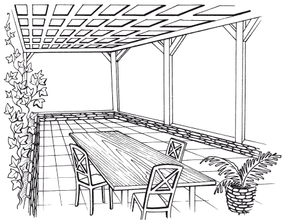
При выборе дизайна крыши не последнее слово будет за климатическими особенностями региона. Но если у вас есть возможность вести постоянное «обслуживание» плоской крыши, то европейские и американские архитекторы смогут предложить множество вариантов использования плоской крыши для создания на ней уголка отдыха для всей семьи, не менее уютного, чем ваш сад. Например, в Париже принята городская программа обустройства плоских крыш и террас с целью превращения их в рекреационные зоны.
Доступ к ней можно организовать через чердачное помещение, либо через дверной проем мансарды (рис. 17).
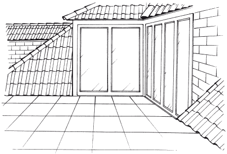
Конечно, ваша терраса может и не быть такой изысканной, но все же вам доставит немалое удовольствие устроиться летним вечером на небольшой площадке на крыше своего дома и полюбоваться прекрасным видом, открывающимся с нее.
Одним словом, плоская кровля может оказаться не такой уж простой в использовании, какой предстает на первый взгляд, главное, подойти к ее обустройству творчески, с фантазией, и тогда, возможно, ваши самые заветные мечты о домашнем уюте смогут воплотиться в жизнь.
Крыши деревянныеДеревянные крыши, как правило, устанавливают в домах, построенных в лесистых районах. Для устройства кровли применяют деревянные плитки, гонт, щепу, кровельную дрань и стружки, доски (тесовая кровля). Материалы для крыши бывают главным образом из древесины хвойных пород деревьев.
При изготовлении кровли не допускаются пороки древесины, то есть отклонения от нормального строения и повреждения, которые могут влиять на ее технические и эксплуатационные свойства. Влажность древесины не должна превышать 25 %, в противном случае возможно ускорение процесса гниения материала, что приведет к снижению гидроизоляционных показателей.
Различают антисептики на водных растворах, пасты на основе водорастворимых антисептиков, а также масляные антисептики, применяемые в органических растворителях.
Материалы из дерева нужно обязательно обрабатывать антисептическими составами.
Главное требование к ним: они должны обладать высокой токсичностью по отношению к патогенным микроорганизмам, но быть безвредными для людей и животных.
Антисептики также должны легко проникать в древесину на требуемую глубину, сохранять высокую токсичность в течение заданного срока, не ухудшать физико-механические свойства древесины, то есть не повышать ее гигроскопичность и электропроводимость, не вызывать коррозии металлических частей, применяемых для соединения и крепления деревянных элементов.
Гонт
Гонт – клинообразные дощечки с пазом (или так называемым шпунтом), расположенным вдоль завышенной кромки. Дощечки выпиливают вдоль волокон древесины, а скос гонта в таком случае проходит поперек волокон. Размеры гонта самые разные: по длине – 500, 600, 700 мм, по ширине – 70, 80, 90, 100, 110 и 120 мм. Высота широкого ребра достигает 15 мм, а низкого – 3 мм. В высоком ребре устраивают трапециевидный паз глубиной 12 мм, шириной по кромке 5 мм, а на дне – 3,5 мм.
Для изготовления гонта используют древесину хвойных (ели, сосны, пихты, кедра), иногда лиственных (осины) пород. Вызвано это тем, что древесина хвойных пород обладает меньшей плотностью по сравнению с плотностью лиственных и легко обрабатывается. Древесина хвойных пород считается легкой (410–500 кг/м ). Кроме того, хвойные деревья обычно имеют правильную форму ствола, и это позволяет полнее и экономичнее использовать их при изготовлении гонта. Смолистость этих пород повышает стойкость древесины к загниванию. Следует помнить, что древесина ели мягче и легче древесины сосны, она быстрее загнивает и менее прочна. Древесина осины отличается стойкостью во влажной среде.
Перед укладкой гонт обрабатывают антисептирующими и огнезащитными составами. Не допускаются пороки древесины (отщепы, отколы и обзол) на продольных кромках гонта.
Кровельные деревянные плитки
Кровельные деревянные плитки – это дощечки клинообразной формы длиной 400, 450, 500, 550, 600 мм и шириной до 70 мм. В зависимости от качества древесины кровельные плитки делятся на 3 сорта и так же, как и гонт, изготавливаются из древесины ели, сосны, кедра, пихты или осины. В плитках, влажность которых должна быть не более 25 %, не допускаются также отколы, отщепы, трещины, обзолы, сучки. Для повышения гнилостойкости и огнестойкости плитки перед использованием следует обработать антисептиками и антипиренами.
Щепеная кровля
Щепеная кровля – покрытие для крыши из кровельной стружки, которую получают после строгания на специальном строгальном станке коротких отрезков древесины хвойных и мягких лиственных пород. Длина кровельной стружки 400–500 мм, ширина – 70–120 мм, толщина – 3 мм, влажность может достигать 40 %. Древесина при изготовлении кровельной стружки не должна иметь сучков и гнили, поскольку они нарушают ее целостность.
Кровельная дрань
Кровельная дрань – однослойные полосы древесины, разрезанные на драни длиной 400–1000 мм, шириной 90–130 мм, толщиной 3–5 мм. Для драни используют древесину хвойных и мягких лиственных пород. При изготовлении не допускаются такие пороки, как гниль, сквозные трещины, выпадающие и гнилые сучки.
Тесовая кровля
Тесовая кровля – кровля из досок, изготовленных из древесины хвойных пород. Доски должны быть остроганы со всех сторон, их толщина может быть от 19 до 25 мм, ширина – 160–220 мм, влажность древесины – в пределах 15–18 %. Для облегчения стока воды вдоль кромок в досках устраивают желобки-дорожки. На древесине недопустимо наличие трещин и сучков.
Кровельные работы
Для покрытия крыши применяют доски толщиной 19–25 мм. Доски преимущественно хвойных пород укладывают вдоль ската перпендикулярно коньку. Покрытие может быть однослойным (вразбежку), которое применяется на временных постройках, или двойным. При двухслойном настиле доски 1-го и 2-го рядов соединяют впритык без зазоров. Оба ряда досок крепят к обрешетке гвоздями длиной 100 мм. Стыки укрывают нащельником. Также можно укладывать доски внахлестку параллельно коньку.
При устройстве кровли вразбежку доски первого ряда прибивают к обрешетке с промежутком, который закрывают вторым рядом досок таким образом, чтобы верхняя доска перекрывала кромки нижних досок на 40–50 мм.
Все доски должны быть одинаковыми по толщине, не допускаются их кривизна, выпадающие сучки, червоточина, гниль. Конек покрывают двумя гладкими досками, которые сколачивают под углом и крепят гвоздями к обрешетке и доскам кровли. Ендовы отделывают кровельной сталью, а также рулонными материалами на мастике по сплошному основанию. Напуски досок на металлическую ендову должны равняться 15 см (рис. 18). Если на деревянных крышах устраивают дымовые трубы, то для защиты от пожаров их покрывают кровельной сталью.
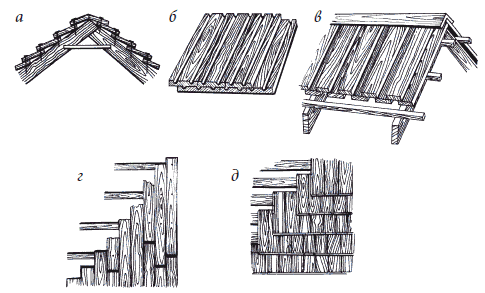